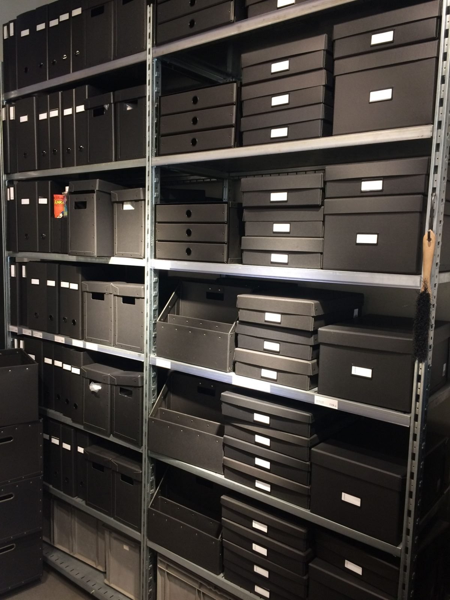

Pull times
Form P2 · Pull times
Staff fetch orders four times a day. An order must be in 45 minutes before a pull.
Pull—
Order deadline for it—
In the reading room—
Arrival by store
| Store | 10:00 pull | 11:30 pull | 14:00 pull | 15:30 pull |
|---|---|---|---|---|
| Strongroom A | 10:10 | 11:40 | 14:10 | 15:40 |
| Strongroom B | 10:15 | 11:45 | 14:15 | 15:45 |
| Map Store | 10:20 | 11:50 | 14:20 | 15:50 |
| Basement | 10:25 | 11:55 | 14:25 | 15:55 |
| Off-site | Next open day, 10:00. Order by 16:30. | |||
